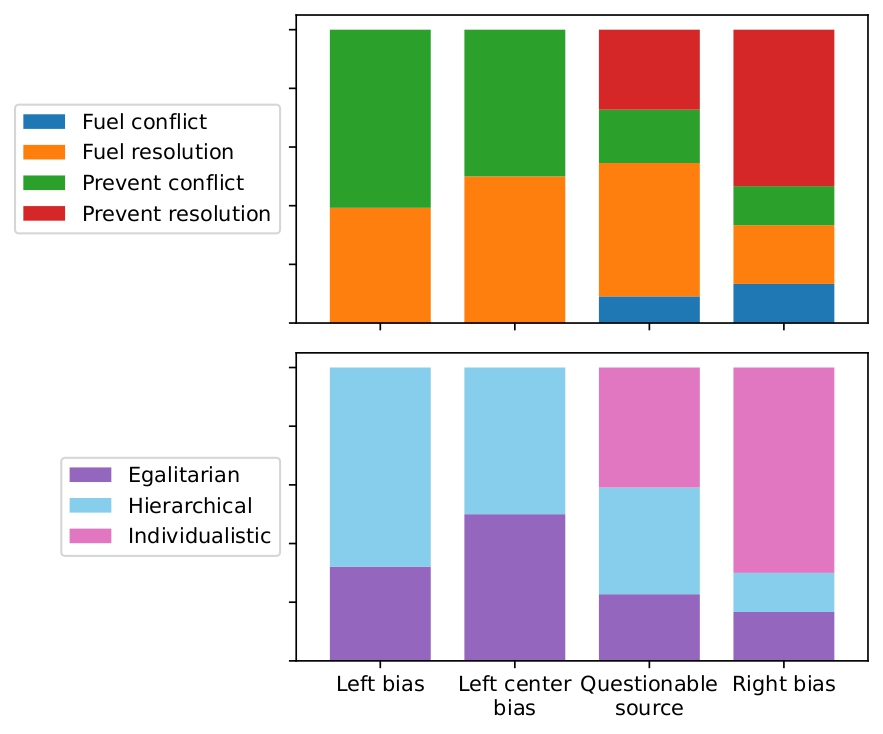

On benefits of compositionality
To apply our framework, we rigorously annotate a dataset of climate-related articles published in the USA in 2017-2019, conduct extensive experiments with LLMs, and analyse the results in the context of political leanings. Please refer to our paper for details.
Notably, the component-focused approach to narrative frames demonstrates benefits in all these aspects:
Improved Model Performance
While regular LLM tricks like few-shot learning, PEFT and reasoning do not help to improve narrative prediction, including their structural components - even when predicted by the model rather than provided - does.

Political Leaning Analysis


While there are some trends in narrative frames used by left-bias and right-bias sources, the paterns become more prominent when we look at the components that underly them. For instance, as the picture on the right shows, right-leaning outlets favor individualistic narratives with "preventing resolution" framing, while left-leaning outlets emphasize collective action.
Narrative frame components can be reliably annotated, achieving Krippendorff α in the range of 0.67-0.82.
Deriving the resulting narrative frame label from component annotations results in a much higher agreement than predicting the narrative frame directly (63% vs 37%).